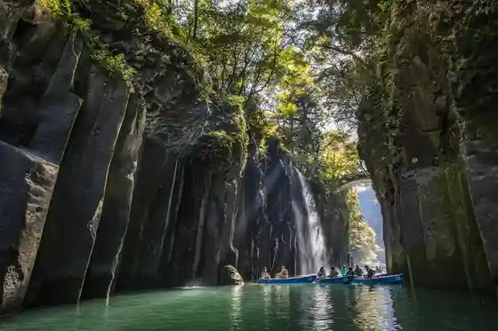
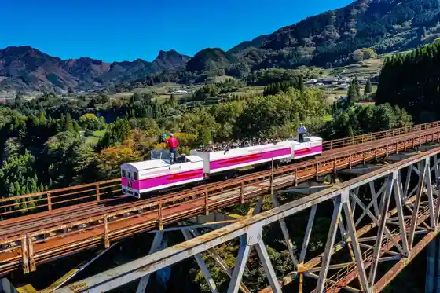
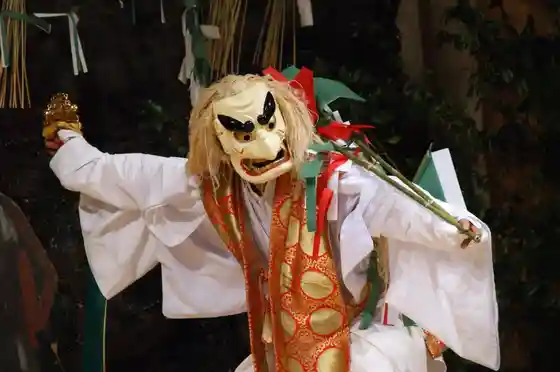
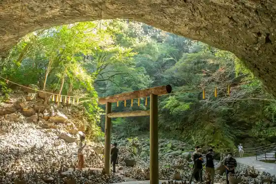

Takachiho Kyo
Takachiho, Miyazaki · 0982-73-1213 · Official / source link

Takachiho Amaterasu Tetsudo
Takachiho, Miyazaki · 0982-72-3216 · Official / source link

Takachiho Shrine
Takachiho, Miyazaki · 0982-72-2413 · Official / source link
Takachiho Kagura
Takachiho, Miyazaki · 0982-72-2413 · Official / source link

Tennan Kawara
Takachiho, Miyazaki · 0982-74-8239 · Official / source link

Kunimigaoka
Takachiho, Miyazaki · 0982-73-1213 · Official / source link
Roadside Station Takachiho
Takachiho, Miyazaki · 0982-72-9123 · Official / source link
Ten Iwato Shrine
Takachiho, Miyazaki · 0982-74-8239 · Official / source link
Ko Ritsu Shrine
Takachiho, Miyazaki · 0982-72-2368 · Official / source link
Kushifuru Shrine
Takachiho, Miyazaki · 0982-72-2413 · Official / source link
Shiawase no Kiiroi Posuto (Takachiho)
Takachiho, Miyazaki · Official / source link
Sobo Yama
Takachiho, Miyazaki · 0982-73-1212 · Official / source link
Tonneru no Eki
Takachiho, Miyazaki · 0982-73-4050 · Official / source link
Oto Campground in Takachiho
Takachiho, Miyazaki · 0982-82-2351 · Official / source link
Shiki Mihara Sukoyaka no Mori Campground
Takachiho, Miyazaki · 0982-82-2151 · Official / source link
Futagami Yama
Takachiho, Miyazaki · 0982-73-1212 · Official / source link
Akimoto Shrine
Takachiho, Miyazaki · 0982-73-1213 · Official / source link
Oni Hachi no Kura
Takachiho, Miyazaki · 0982-73-1831 · Official / source link
Tochi Mata Tanada
Takachiho, Miyazaki · 0982-73-1213 · Official / source link
Takachiho Budokan
Takachiho, Miyazaki · 0982-72-4723 · Official / source link
Takachiho Sogo Sports Park (Tenisukoto)
Takachiho, Miyazaki · 0982-72-4723 · Official / source link
Takachiho Sogo Sports Park (Yakyujo)
Takachiho, Miyazaki · 0982-72-4723 · Official / source link
Shimotsuke Hachiman Dai Shrine
Takachiho, Miyazaki · 0982-73-1212 · Official / source link
Gogatokoro Highlands
Takachiho, Miyazaki · 0982-73-1212 · Official / source link
O Ko no Kuchi Tanada
Takachiho, Miyazaki · 0982-73-1213 · Official / source link
Orihara Guraundo
Takachiho, Miyazaki · 0982-72-4723 · Official / source link